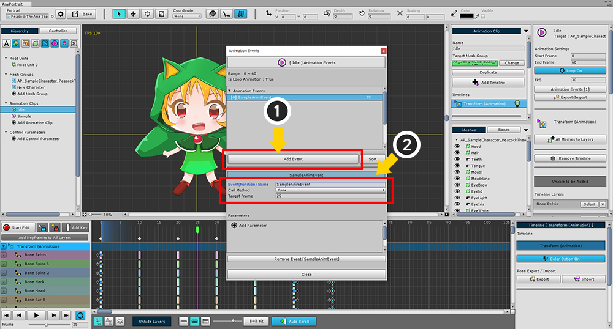
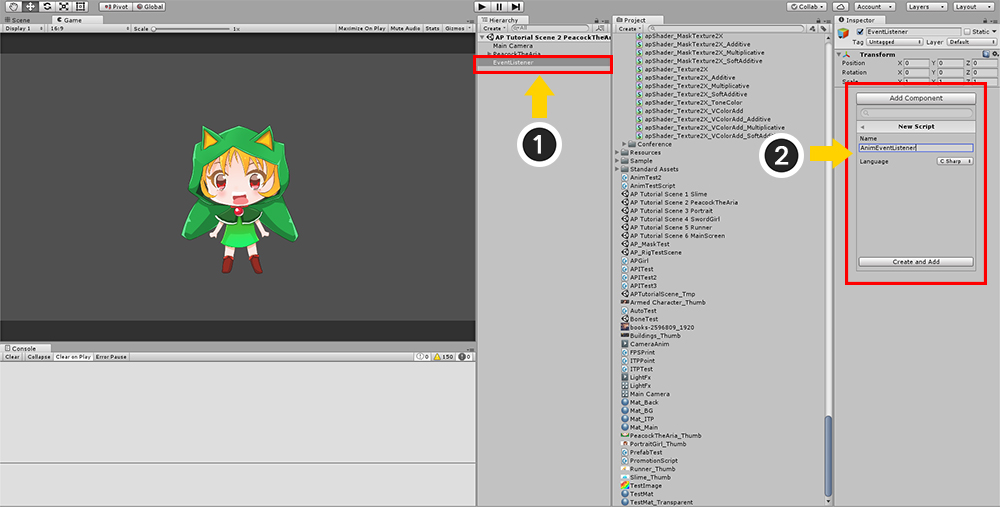
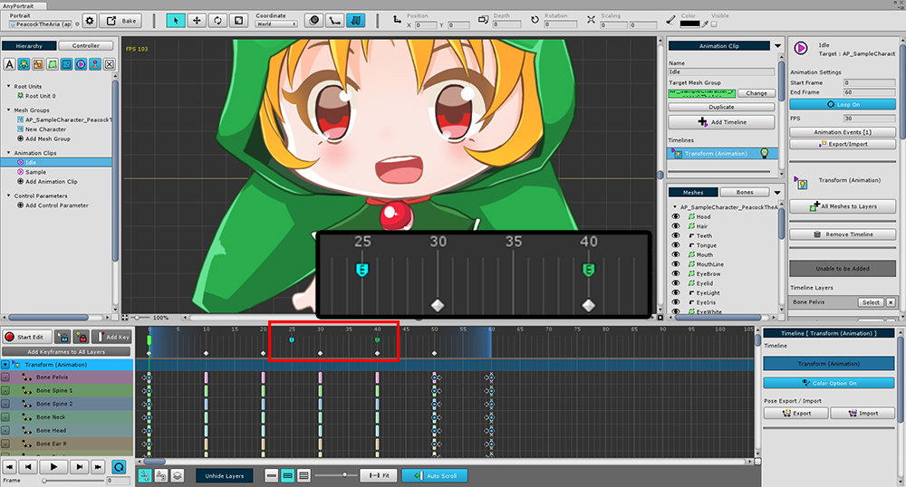
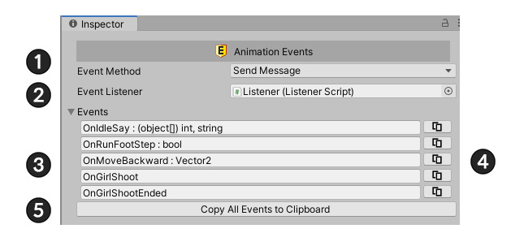
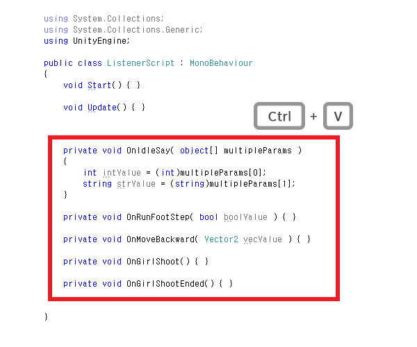

AnyPortrait > マニュアル > アニメーションイベントとスクリプト
アニメーションイベントとスクリプト
1.3.4
ゲームに応じて、アニメーションのある時点で、キャラクターは何らかの相互作用を必要とします。
走るキャラクターがジャンプをしたときに土ぼこりが発生したり、キャラクターが振るう剣がモンスターを殴ることもできます。
このページでは、「アニメーションイベント (Animation Event)」関数を使用して、スクリプトと対話する方法を学習します。
(C＃スクリプトを含む。)

アニメーションのプロパティUIで、「Animation Events」ボタンをクリックして、アニメーションイベントを登録するダイアログを開きます。
アニメーションイベントを追加し、それらをスクリプトに関連付け

(1) 「Add Event」ボタンをクリックして新しいイベントを追加します。
(2) イベント名を設定し、呼び出すフレームを入力します。
イベントの名前はスクリプトとリンクされているので、その時の名前を覚えておいてください。
私はここで 「SampleAnimEvent」として作成しました。

アニメーションイベントが追加されると、タイムラインGUIに「イベントマーカー (Event Marker)」が追加されたことがわかります。

「Bake」とシーンを開きます。
イベントに関連付けるスクリプトを作成します。
(1) スクリプトを格納する「GameObject」を作成します。 (それは新しいものである必要はなく、スクリプトを含む 「GameObject」のどれかでもかまいません。)
(2) 「MonoBehaviour」スクリプトを作成して追加します。
次のコードを記述します：
上で作成したアニメーションイベントの名前は「SampleAnimEvent」です。
using UnityEngine;
public class AnimEventListener : MonoBehaviour
{
void Start() { }
void SampleAnimEvent()
{
Debug.Log("Sample Anim Event");
}
}
上のコードでわかるように、作成されたアニメーションイベントと同じ名前の関数を呼び出します。
したがって、アニメーションイベントとスクリプトは同じ名前と同じ引数を持つ必要があります。

キャラクターを選択すると、InspectorにapPortraitプロパティが表示されます。
スクリプトがイベントを受信させるには、作成したスクリプトが含まれている「GameObject」を「EventListener」に設定してください。

ゲームを実行すると、イベントが発生し、コンソールウィンドウでスクリプトがそれを取得してログを出力することがわかります。
アニメーションイベントにパラメータを追加

アニメーションイベントにパラメータを追加できます。
このとき、パラメータは関数の引数として呼び出されます。
(1) 「Add Parameter」ボタンを押してパラメータを追加します。
(2) 「Parameter Type」を選択し、(3) で転送する値を入力します。
(パラメータとして渡すことができる型は 「Bool、Int、Float、Vector2、String」です。)
using UnityEngine;
public class AnimEventListener : MonoBehaviour
{
void Start() { }
void SampleAnimEvent(float floatValue)
{
Debug.Log("Sample Anim Event - " + floatValue);
}
}
パラメータを受け取るように関数を変更します。
変数型のパラメータを宣言します。

ゲームを実行すると、パラメータの値が渡されていることがわかります。
アニメーションイベントを複数のフレームで連続して呼び出

場合によっては、1つのフレームでイベントを発生させるのではなく、特定のフレームにわたってイベントを連続的に発生させる必要があります。
(1) 「Call Method」を「Once」から「Continuous」に変更します。
(2) 「Start Frame」と「End Frame」をそれぞれ設定します。
(3) 2つのパラメータ値を指定できます。
各値は、「Start Frame」と「End Frame」によって呼び出されます。 その間に、直線的に補間された値がスクリプトに渡されます。
(「String」型は補間されないので、この機能はサポートされていません。)

「Continuous」タイプのアニメーションイベントは、異なる色のマーカーで表されます。
開始点は青で終点は緑です。

「Bake」の後にゲームを実行すると、フレームごとに補間された値が呼び出されます。
2つ以上のパラメータを持つアニメーションイベントを作成

複数のパラメータを持つアニメーションイベントを作成することもできます。
各パラメーターは異なるタイプを持つことができます。
上記の画面は、それぞれ「Integer、Float、Vector2」という3つのパラメータを持つ画面です。
(私は「MultipleParamAnimEvent」という名前の新しいアニメーションイベントを作成します。)
using UnityEngine;
public class AnimEventListener : MonoBehaviour
{
void Start() { }
void MultipleParamAnimEvent(object[] multipleParams)
{
int intParam = (int)multipleParams[0];
float floatParam = (float)multipleParams[1];
Vector2 vector2Param = (Vector2)multipleParams[2];
Debug.Log("Multiple Param Anim Event");
Debug.Log("Param 1 : " + intParam);
Debug.Log("Param 2 : " + floatParam);
Debug.Log("Param 3 : " + vector2Param);
}
}
「Object Array」タイプの1つの引数だけが、3つの引数ではなく、関数パラメータとして使用されます。
この配列には、エディタで定義した順序でパラメータが格納されます。
変数は型キャストによって参照できます。

ゲームを実行すると、3つのパラメータがスクリプトに渡されることがわかります。
改善されたインスペクタでのアニメーションイベント
1.3.4
AnyPortrait v1.3.4で、更新されたインスペクター（関連ページ）を通って、アニメーションイベントをすばやく確認することができます。
また、アニメーションイベントをスクリプトにコピーするか、呼び出し方式を変えることが可能です。

アニメーションイベントを持ったキャラクターをUnityシーンから選択すれば、上記のような画面がインスペクタに表示されます。
(1) アニメの呼び出し方式を「Send Message」と「Callback」の中から選択することができます。従来の方式では、「Send Message」です。
(2) アニメのイベントを受信して処理する「リスナー（Listener）」オブジェクトです。（既存のInspector上に存在していた、このトピックの位置が変わりました。）
(3) アニメイベントです。イベントの名前とパラメータを確認することができます。
(4) アニメイベントを「クリップボード」にコピーします。コピーされたフォームは、C#スクリプトで貼り付けることができるよう加工されます。
(5) すべてのアニメーションイベントをクリップボードにコピーします。
ここで追加された機能である「クリップボードにアニメーションイベントをコピーする」機能を使ってみましょう。
まず、(4)または(5)のコピーボタンを押します。

スクリプトエディタを開いて貼り付けをすると、上記のよう、アニメーションイベントの名前、種類に合ったコードが追加されます。
今、アニメーションイベントを覚えて作成する余計な手間を避けることができます。

v1.3.4で追加されたもう一つの特徴は、「Callback」方式です。
既存の「Send Message」が「Unity Send Message」を利用したものであれば、これは、関数を直接指定する「Unity Event」と同様の方法です。
性能の向上はもちろんのこと、イベントを受信する関数の名前を同じに設定する必要がない利点があります。
（実際には「Unity Event」を使用しなかったが、私たちは、ユーザーが「Unity Event」のように使用できるように、ほぼ同様に開発しました。）
(1) 「Event Method」を「Callback」に変更してみましょう。

既存の「Event Listener」がなくなり、各イベントの呼び出しのターゲットを指定することができるようUIが変更されます。

(1) +ボタンを押します。
(2) イベントリスナーとコールバック関数を設定できる項目が追加されます。

(1) シーンでイベントを受け取る「Monobehaviour」オブジェクトを割り当てます。
(2) 右側の空白をクリックすると、イベントを受け取ることができる関数の一覧が表示されます。適切な関数を選択します。
もし1つの「GameObject」に二つ以上の「Monobehaviour」コンポーネントが追加されている場合は、関数の一覧を通しリスナーを交換することができます。

(1) 同じように、1つのイベントを同時に複数のリスナーで受け取るか、または複数の関数で受けることができるように設定することができます。
(2) 項目を削除したい場合は、-ボタンを押します。

コールバック関数を指定するときは、イベントの種類（パラメータの数、種類、順番）に合った関数がない場合は、上記のようにリストには何も出ません。
どのような方法を使用しても、あなたのスクリプトが、アニメーションイベントを受けて動作するようにすることができます。
自分に合った方法を使用してみてください！